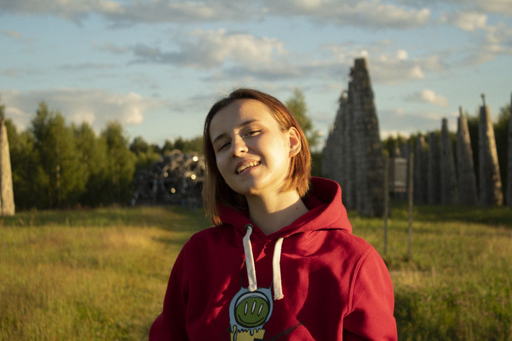

Главная
Проекты
Давайте сделаем проект вместе
Привет, меня зовут Катя Шевченко, я бизнес-аналитик в компании CROC и UX/UI дизайнер
в российском филиале компании National Geogpaphic. На этой странице будет информация обо мне.
Подробнее о проектах можно узнать в разделе Проекты

©Все права защищены.